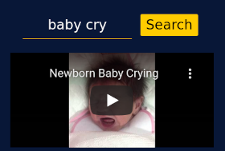

Audio Retrieval with Natural Language Queries |
 | |
|---|---|---|
| Online demo of video retrieval based on natural language description of audio as described in this project page. |
Text-to-audio search engine |
Frozen in Time Video Search Demo |
||
|---|---|---|
| Online demo of video retrieval method described in Frozen in time: A joint video and image encoder for end-to-end retrieval. |
Visual search of nearly 2.6M videos using text keywords. |